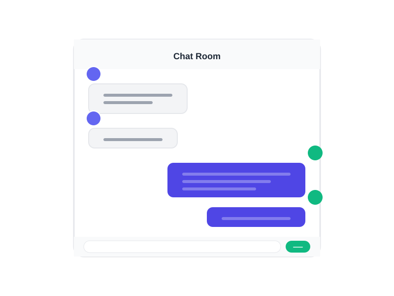

A modern real-time chat application. Type @ai in any room to get instant answers from a Groq-powered AI — right inside the conversation.

A complete real-time chat experience — out of the box, no setup needed.
Type @ai to ask anything. Groq's LLaMA model replies instantly, right in the chat room.
Exchange messages instantly with other users over WebSocket — zero page reloads.
See live join and leave events as users enter or exit the chat room.
Every user gets a unique color avatar auto-generated from their name.
Works beautifully on desktop and mobile with an adaptive layout.
Containerized and ready to ship — deploy anywhere with a single command.
Deployed on Render with zero-config cloud hosting support.
ChatUp is a modern real-time chat application built with Spring Boot and WebSocket technology. It uses STOMP over SockJS to enable instant communication between users — no polling, no delays.
The embedded Groq AI assistant understands context and gives concise, conversational answers — just prefix any message with @ai and hit send.
ChatUp is designed for easy deployment in any environment. Whether you're running it locally, in Docker containers, or on cloud platforms, ChatUp adapts to your infrastructure.
A production-ready Dockerfile is included. Set your GROQ_API_KEY environment variable and you're live.